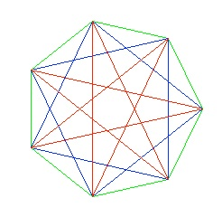
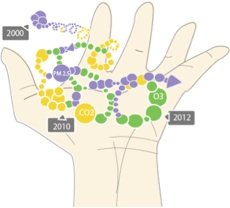

Research Interests

In general, my research interests can be summarized in the following areas:
Artificial Intelligence
Spatial and Temporal Reasoning
Computational Sustainability
My research
I am interested in understanding the mechanisms that leads to intelligent behaviour. I am fortunate to be born in an era where the quest for understanding intelligence is not merely a philosophical one, but one that can be transformed with computing technology to produce products that benefit real people, and driving the rapid appreciation of the values of companies such as Amazon, Google and many others.
Space is ubiquitous in many practical problems that requires intelligence. Therefore, spatial representations and reasoning are essential for our understanding of intelligence. Spatial information is never entirely random, and thus can be organized with structure. In my Ph.D. I investigated the underlying structures of spatial constraints in order to enable us to reason more efficiently with our queries, and explain why some spatial constraints are more computationally difficult than others.
One cause that personally concerns me a great deal is the impact of climate change on humanity, something that threatens our very existence. Therefore, professionally I am interested in whether techniques developed in Artificial Intelligence can help us tackling this problem. This brought me to the new and exciting field of computational sustainability. One of the first things is to ascertain the ground truth of natural phenomenons, such as how hot is it out there, how much air pollution are being generated, etc. This would require not only deploying the necessary sensors, but also developing a spatial model in making the best estimations of the phenomenon based on all the available data. At EPFL, I am currently developing a model for interpreting measurements from many low-cost air quality sensors, which would be useful for estimating how much bad air we breathe each day. Further, as deploying these sensor are still relatively expensive, I have also looked at using computational game theory to design mechanisms such collect truthful and relevant measurements from an independent community of sensor owners.

